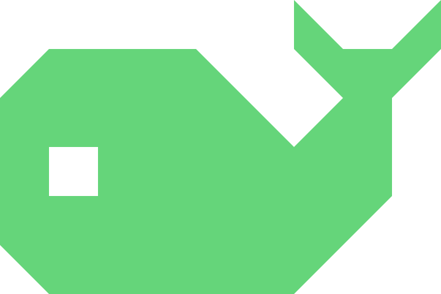
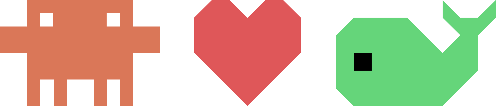

Containers
Real-time CPU and memory. Start, stop, restart, exec, logs and open exposed ports straight into your browser.
- s start/stop
- r restart
- c console
- l logs
- o open port

tinydContainers, images, volumes and networks — managed with a keystroke. No browser tabs. No memorized flags. Just a beautifully minimal TUI that adapts to any pane.
Four tabs. Live stats. Deep inspection. tinyd treats Docker the way
top treats processes — fast, focused, fluent.
Real-time CPU and memory. Start, stop, restart, exec, logs and open exposed ports straight into your browser.
Layer-by-layer composition, architecture, exposed config. Spawn new containers with an interactive modal for ports, volumes and env.
See exactly which containers are attached, driver options, usage — and delete safely with confirmation.
Topology at a glance. IPv4 / IPv6 subnets, active vs. unused filters, connection state — for when port-mapping math gets hairy.
Adapts to any terminal size, with a min of 60 columns × 13 rows. Resize your VS Code split, drop into a tmux pane, or SSH into a remote Docker host — the layout reflows without a restart.
Switch tabs. The interface is keyboard-only — and proud of it.
Requires Go 1.19+ and a running Docker daemon (local or remote).
$ git clone https://github.com/jalonsogo/tinyd.git
$ cd tinyd
$ go build -o tinyd
$ ./tinyd$ export DOCKER_HOST=tcp://host:2376
$ ./tinyd# autodetected on macOS / Windows
$ ./tinydAll letter keys are case-insensitive. F1 opens help any time.
tinyd is an experiment in what happens when a designer hands the keys to an AI pair-programmer and asks for the smallest possible Docker Desktop. The result: a little terminal app that boots in milliseconds and stays out of your way.
